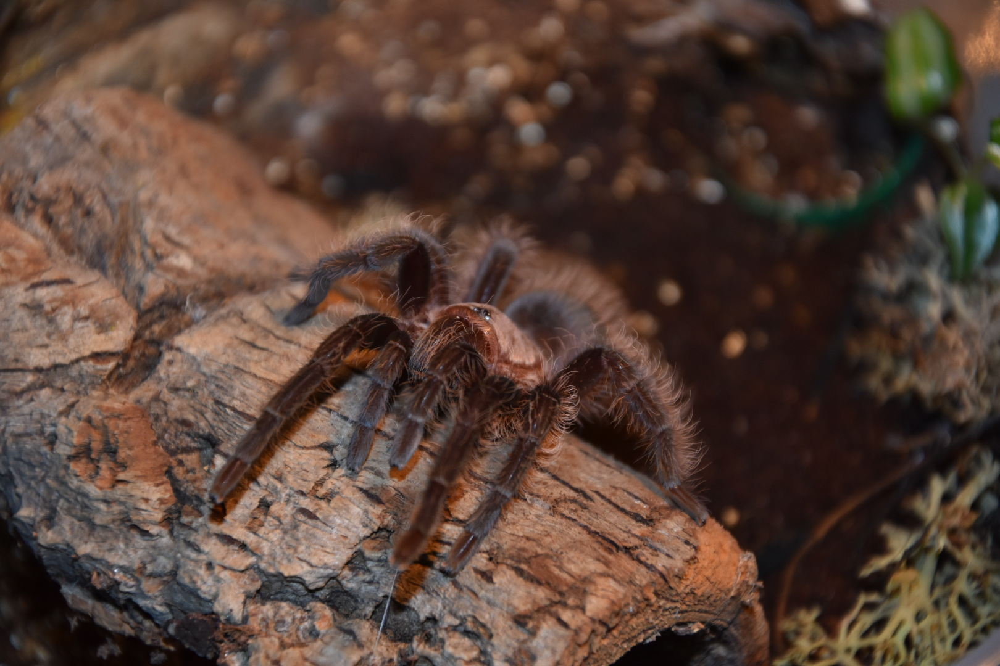
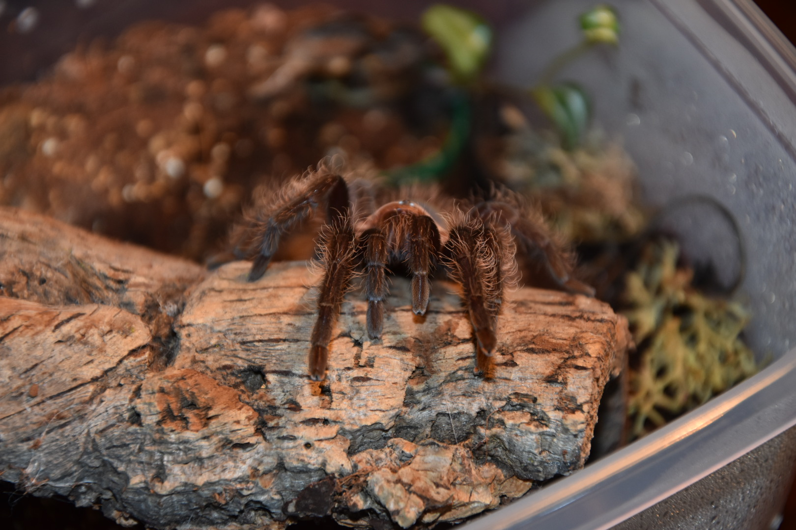

Tliltocatl albopilosum - Curlyhair tarantula
Wygląd i rozmiary
Samice tego gatunku dorastają do około 8 cm długości ciała (DC), samce mniejsze około 6 cm DC. Rozpiętość odnóży dochodzi do około 15-16 cm. Młode osobniki są głównie szaro-brązowe. Podrośnięta sztuka ma odnóża i odwłok koloru kruczo-czarnego z dodatkiem połysku metalicznego granatu na dalszych częściach odnóży. Karapaks koloru brązowego z jaśniejszymi elementami. Pająk ten jest bujnie owłosiony. U dorosłych osobników na odnóżach i odwłoku występują długie, rude włoski, które czasami mogą być w kolorze jasnej pomarańczy.
Długość życia
Samice dożywają do 20 lat, samce padają około rok po ostaniej wylince.
Występowanie i biotop
Na wolności występuje na terenie Hondurasu, Gwatemali, Panamy i Kostaryki (Ameryka Środkowa i Północna).
Temperatura i wilgotność
Za dnia utrzymywać temperaturę 26-30 stopni , nocami spadki do 23 stopni. Wilgotność powinna wynosić 70-80%.
Cechy szczególne
Gatunek naziemny, powolny, łagodny. Wyczesuje włoski parzące z odwłoka. Jad słaby. Polecany dla początkujących. Znajduje się na liście CITES.

